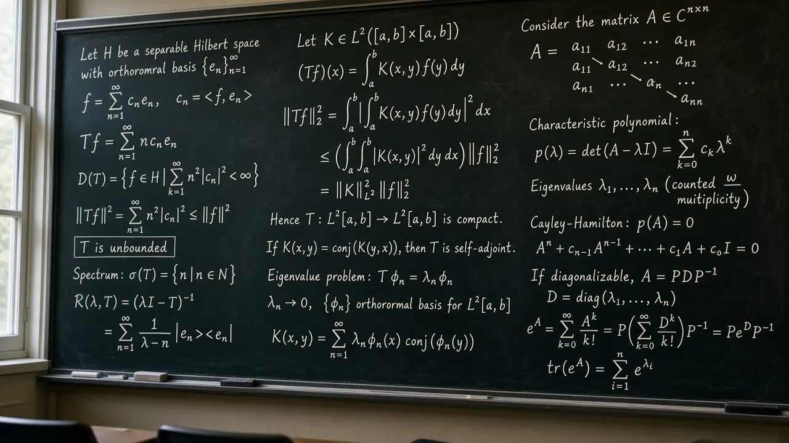

An inner product is a product of two vectors that returns a scalar and obeys four rules: symmetry, linearity in the first argument, a value that is never negative when a vector is paired with itself, and that value equal to zero only for the zero vector. The ordinary dot product is the standard inner product on $\mathbb{R}^n$. It is not the only one. On the same two arrows, a weighted product can report a different angle, and it can report a right angle where the dot product does not. Cauchy Schwarz is the inequality that keeps those angles inside a legal cosine. This page states the four rules, checks a weighted product by exact arithmetic, and checks the inequality the same way, with no decimal approximation.
The four properties
Sergei Treil's open notes Linear Algebra Done Wrong, Chapter 5, Section 1.3, define an inner product on a real or complex vector space as a scalar assigned to each pair of vectors so that four properties hold. Writing $(\mathbf{x},\mathbf{y})$ for the product:
- Symmetry. Over the reals, $(\mathbf{x},\mathbf{y})=(\mathbf{y},\mathbf{x})$. Over the complex numbers the matching rule is conjugate symmetry, $(\mathbf{x},\mathbf{y})=\overline{(\mathbf{y},\mathbf{x})}$.
- Linearity in the first slot. $(\alpha\mathbf{x}+\beta\mathbf{y},\mathbf{z})=\alpha(\mathbf{x},\mathbf{z})+\beta(\mathbf{y},\mathbf{z})$ for scalars $\alpha$ and $\beta$.
- Never negative on a repeated vector. $(\mathbf{x},\mathbf{x})\ge 0$.
- Zero only at zero. $(\mathbf{x},\mathbf{x})=0$ exactly when $\mathbf{x}=\mathbf{0}$.
The length, or norm, is then $\|\mathbf{x}\|=\sqrt{(\mathbf{x},\mathbf{x})}$. A vector space carrying one of these products is an inner product space. The first two properties force linearity in the second slot as well, up to a conjugate when the scalars are complex. Treil records that consequence as property $2'$ in the same section.
For real vectors the conjugate does nothing, so every author agrees. For complex vectors they do not. Treil's Section 1.2 sets $(\mathbf{z},\mathbf{w})=\mathbf{w}^{*}\mathbf{z}$, with the conjugate on the second vector. Gilbert Strang, in the MIT OpenCourseWare 18.06 Lecture 26 transcript, says the real product was $\mathbf{y}^{\mathsf T}\mathbf{x}$ and the complex product is $\mathbf{y}^{\mathsf H}\mathbf{x}$, with the conjugate on the first vector of that pair. The two formulas are conjugates of each other. This page does every numerical check over the reals, where the disagreement disappears.
The dot product is one inner product
Jim Hefferon's open textbook Linear Algebra, Section II.2 (the PDF copy used here is the one hosted with the book), Definition 2.3, defines the dot product of two real vectors with the same number of components by
$$\mathbf{u}\cdot\mathbf{v}=u_1 v_1+u_2 v_2+\cdots+u_n v_n.$$
He calls this the dot product, or inner product, or scalar product. The square of the length is the repeated product: $\mathbf{u}\cdot\mathbf{u}=|\mathbf{u}|^2$. Symmetry is the commute of ordinary multiplication. Exercise 2.38 on that page asks the reader to check linearity. The repeated product $u_1^2+\cdots+u_n^2$ is a sum of squares, so it is never negative, and it is zero only when every component is zero. So the four properties hold, and the dot product is an inner product. It is the one the vector operations calculator and the Gram Schmidt calculator actually compute. Neither tool accepts a different formula.
A weighted product that still qualifies
Let $S=\begin{pmatrix}2&0\\0&1\end{pmatrix}$ and define
$$\langle\mathbf{x},\mathbf{y}\rangle_S=\mathbf{x}^{\mathsf T} S\mathbf{y}=2x_1 y_1+x_2 y_2.$$
$S$ is symmetric. Its eigenvalues are the diagonal entries $2$ and $1$, both positive. The characteristic polynomial is $\lambda^2-3\lambda+2=(\lambda-2)(\lambda-1)$, which the 2 by 2 eigenvalue calculator will match from the trace $3$ and the determinant $2$. Strang's 18.06 ZoomNotes list two tests for a symmetric matrix to be positive definite: every eigenvalue positive, and the energy $\mathbf{x}^{\mathsf T} S\mathbf{x}$ positive for every nonzero $\mathbf{x}$. Here the energy is $2x_1^2+x_2^2$, which is exactly $\langle\mathbf{x},\mathbf{x}\rangle_S$. It is zero only at the origin. Symmetry and linearity are the matching properties of matrix multiplication. So $\langle\,,\,\rangle_S$ is an inner product, and it is not the dot product: the first coordinate is counted twice.
Linearity is an identity, but it is worth seeing on numbers. Take $\mathbf{a}=(1,2)$, $\mathbf{b}=(2,1)$, and $\mathbf{w}=(0,1)$. Then $3\mathbf{a}+4\mathbf{w}=(3,10)$ and
$$\langle(3,10),\mathbf{b}\rangle_S=2\cdot 3\cdot 2+10\cdot 1=22.$$
The split version is $3\langle\mathbf{a},\mathbf{b}\rangle_S+4\langle\mathbf{w},\mathbf{b}\rangle_S=3\cdot 6+4\cdot 1=22$. Same integer, both ways.
The Gram Schmidt process
Orthogonalizing a list with the ordinary dot product, which is one inner product among several.

Orthogonal projection and least squares
The normal equations use the same dot product. A different product moves the foot of the perpendicular.

Change of basis explained
Why an orthonormal basis makes $P^{-1}$ equal to $P^{\mathsf T}$, and which product that word orthonormal refers to.

Eigenvalues in plain language
The stretch factors that decide whether a symmetric matrix can define an inner product.
Same arrows, two angles
Keep $\mathbf{a}=(1,2)$ and $\mathbf{b}=(2,1)$. The dot product is $1\cdot 2+2\cdot 1=4$, and each squared length is $1+4=5$. The weighted product is $2\cdot 1\cdot 2+2\cdot 1=6$, with squared lengths $2\cdot 1+4=6$ and $2\cdot 4+1=9$. The cosine of the angle is the product divided by the two lengths, so the squared cosine avoids the square roots:
| Check | Dot product | Weighted product |
|---|---|---|
| Product of $(1,2)$ and $(2,1)$ | $4$ | $6$ |
| Squared lengths | $5$ and $5$ | $6$ and $9$ |
| Squared cosine | $16/25$ | $36/54=2/3$ |
| Product of $(1,1)$ and $(1,-2)$ | $-1$ | $0$ |
$16/25=0.64$ and $2/3\approx 0.666\ldots$ are close, but they are not the same angle. The second row of the table is the sharper disagreement. Under the dot product, $(1,1)$ and $(1,-2)$ are not perpendicular, because $1+(-2)=-1$. Under the weighted product, $2\cdot 1\cdot 1+1\cdot(-2)=0$, so they are perpendicular. Orthogonality is a statement about a chosen product. It is not a property of the two arrows alone.
Hefferon's Definition 2.7 builds the angle from the dot product, and Corollary 2.8 says two vectors in $\mathbb{R}^n$ are orthogonal exactly when that dot product is zero. Both sentences are about the standard product. Swap the product and the right angle moves.
Cauchy Schwarz, checked by integers
Hefferon's Corollary 2.6, the Cauchy Schwarz inequality for the dot product on $\mathbb{R}^n$, says $|\mathbf{u}\cdot\mathbf{v}|\le|\mathbf{u}|\,|\mathbf{v}|$, with equality exactly when one vector is a scalar multiple of the other. Treil's Theorem 1.7 states the same size bound for a general inner product: $|(\mathbf{x},\mathbf{y})|\le\|\mathbf{x}\|\,\|\mathbf{y}\|$. Squaring both sides, since both are nonnegative, turns the bound into an integer comparison.
$(\mathbf{a}\cdot\mathbf{b})^2=16$ and $|\mathbf{a}|^2|\mathbf{b}|^2=25$. And $16\le 25$.
$\langle\mathbf{a},\mathbf{b}\rangle_S^2=36$ and $\langle\mathbf{a},\mathbf{a}\rangle_S\langle\mathbf{b},\mathbf{b}\rangle_S=6\cdot 9=54$. And $36\le 54$.
Equality is the interesting edge. Let $\mathbf{c}=3\mathbf{a}=(3,6)$. Then $\langle\mathbf{a},\mathbf{c}\rangle_S=2\cdot 1\cdot 3+2\cdot 6=18$ and $\langle\mathbf{c},\mathbf{c}\rangle_S=2\cdot 9+36=54$, so both sides of the squared inequality are $18^2=324$ and $6\cdot 54=324$. One vector is a scalar multiple of the other, which is Hefferon's equality case for the dot product, and the weighted integers match too.
Treil's proof of Theorem 1.7, in the real case, is the quadratic that has to stay nonnegative. For every real $t$,
$$0\le\langle\mathbf{a}-t\mathbf{b},\mathbf{a}-t\mathbf{b}\rangle_S=6-12t+9t^2.$$
The $t$ that Treil plugs in is the product divided by the second squared length, $t=6/9=2/3$. The quadratic there equals $6-8+4=2$. The same remainder falls out of the inequality itself: $6-36/9=2$. The gap of $2$ is $54-36$ divided by $9$, so the quadratic check and the integer check are one fact written two ways.
What changes downstream
The Gram Schmidt process subtracts projections whose coefficients are dot products. Replace every dot with $\langle\,,\,\rangle_S$ and you orthogonalize for the weighted geometry instead. The vectors that come out perpendicular for $S$ need not be perpendicular for the dot product. The least squares normal equations $A^{\mathsf T}A\hat{\mathbf{x}}=A^{\mathsf T}\mathbf{b}$ are the same story: the transpose encodes the dot product. A different product replaces those transposes.
On change of basis, an orthonormal basis is the case $P^{-1}=P^{\mathsf T}$. "Normal" means length $1$, and "ortho" means the product of distinct columns is zero. Both sentences use whichever inner product you fixed before you started. The ordinary dot product is the one that page checks with fractions. Diagonalization of a real symmetric matrix produces an eigenbasis that is orthonormal for that same dot product. The eigenvalues of $S$ being positive is what let $S$ define a product in the first place. Those stretch factors are the subject of eigenvalues in plain language.
None of this replaces the vector space axioms or the basis and dimension count. An inner product is extra structure on a space that already has addition and scaling. Linear independence does not mention a product. A set can be independent and still fail to be orthogonal.
Checkpoints
- For $\mathbf{u}=(1,-1)$ and $\mathbf{v}=(1,2)$, compute the dot product and $\langle\mathbf{u},\mathbf{v}\rangle_S=2u_1 v_1+u_2 v_2$. One of them is zero. Which one?
- Show $\langle(x,y),(x,y)\rangle_S=0$ forces $x=0$ and $y=0$, using that a sum of a nonnegative term and a square is zero only when both are zero.
- For $\mathbf{a}=(1,2)$ and $\mathbf{c}=(3,6)$, check that the dot product form of Cauchy Schwarz is also an equality, by comparing $(\mathbf{a}\cdot\mathbf{c})^2$ with $|\mathbf{a}|^2|\mathbf{c}|^2$.
Answers, so the check is not a guess. For the first, the dot product is $1+(-2)=-1$, and the weighted product is $2\cdot 1\cdot 1+(-1)\cdot 2=0$. For the third, $\mathbf{a}\cdot\mathbf{c}=1\cdot 3+2\cdot 6=15$ and $|\mathbf{a}|^2|\mathbf{c}|^2=5\cdot 45=225$, and $15^2=225$.
Common mistakes
- Treating orthogonality as a picture you can see without a formula. $(1,1)$ and $(1,-2)$ look unrelated to a right angle in the usual grid, and the weighted product still says they are perpendicular. Name the product before you say the word orthogonal.
- Using the Gram Schmidt calculator on a weighted problem. That tool, and the vector operations calculator, use the dot product. A zero on the screen is a zero dot product, not a zero of $\langle\,,\,\rangle_S$.
- Dropping the squares in Cauchy Schwarz. The bound is on the absolute value of the product, against the product of the lengths. Comparing $6$ with $6\cdot 9$ is the wrong test. Comparing $36$ with $54$ is the right one.
- Importing a complex formula into a real calculation. Strang's Hermitian product and Treil's $\mathbf{w}^{*}\mathbf{z}$ disagree about which slot gets the conjugate. On real entries both collapse to the dot product, so the disagreement is invisible until a component is actually complex.
Where this fits
This explainer sits in the linear algebra cluster after what is a vector space and basis and dimension, beside Gram Schmidt and orthogonal projection. The map is the linear algebra topic, and a study order is the linear algebra first course. A determinant tells you whether the columns of $S$ give a positive area scale. For this diagonal $S$ the determinant is $2$, which matches the product of the eigenvalues.
Sources and further reading
- Jim Hefferon, Linear Algebra, Section II.2 Length and Angle Measures, Definition 2.3, Corollary 2.6, Definition 2.7, Corollary 2.8, and Exercise 2.38. hefferon.net/linearalgebra, with the book PDF at jheffero.w3.uvm.edu (accessed 20 Nov 2026)
- Sergei Treil, Linear Algebra Done Wrong, Chapter 5, Sections 1.2 and 1.3 and Theorem 1.7. math.brown.edu (accessed 20 Nov 2026)
- Gilbert Strang, MIT OpenCourseWare 18.06 Lecture 26 transcript, complex inner product as $\mathbf{y}^{\mathsf H}\mathbf{x}$. ocw.mit.edu (accessed 20 Nov 2026)
- Gilbert Strang, MIT OpenCourseWare 18.06 ZoomNotes, positive definite tests: all eigenvalues positive, and $\mathbf{x}^{\mathsf T}S\mathbf{x}>0$ for every nonzero $\mathbf{x}$. ocw.mit.edu (accessed 20 Nov 2026)
Last reviewed: 20 November 2026.
Common questions
What is an inner product in one sentence?
It is a product of two vectors that returns a scalar, is symmetric (conjugate symmetric over the complex numbers), is linear in the first vector, is never negative when a vector is multiplied by itself, and is zero in that case only for the zero vector.
Is the dot product the only inner product on the plane?
No. The dot product is the standard one. Any symmetric matrix $S$ with positive eigenvalues defines another product by $\mathbf{x}^{\mathsf T} S\mathbf{y}$. On this page, $S$ equal to the diagonal matrix with $2$ and $1$ makes $(1,1)$ and $(1,-2)$ orthogonal, while their dot product is $-1$.
How do you check Cauchy Schwarz without square roots?
Square both sides. For the dot product of $(1,2)$ and $(2,1)$ the test is $16$ less than or equal to $25$. For the weighted product $2x_1 x_2+y_1 y_2$ the same vectors give $36$ less than or equal to $54$. Equality of those two integers holds when one vector is a scalar multiple of the other, as with $(1,2)$ and $(3,6)$, where both sides are $324$.
Which calculator on this site knows a custom inner product?
None of them. The vector operations calculator and the Gram Schmidt calculator both use the ordinary dot product. You can still type the matrix $S$ into the 2 by 2 eigenvalue calculator and check that its eigenvalues are positive, which is the test that $\mathbf{x}^{\mathsf T} S\mathbf{y}$ is an inner product.
Related reading

Diagonalization explained
A real symmetric matrix has an eigenbasis that is orthonormal for the dot product.

Basis and dimension explained
A basis is independent and spanning. An inner product is extra structure on top of that.
What is a vector space?
The addition and scaling rules that an inner product assumes are already in place.

Linear independence explained
Independence does not mention a product. Orthogonal sets are a special kind of independent set.
- Linear algebra topic map and the linear algebra first course
- Glossary: inner product, all explainers, and the sources page